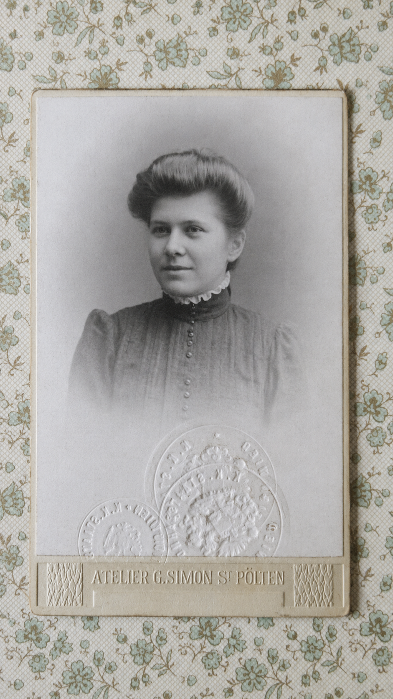

Ihr wahrer Name ist in der Zeit verloren gegangen. Doch dieses Porträt lädt uns ein, für einen Augenblick stehen zu bleiben – und uns vorzustellen, welches Leben hinter diesem Gesicht gelegen haben könnte.
Geschichte anhören
Lehne dich einen Moment zurück und begleite sie auf eine kleine Reise in das Wien vergangener Tage.
Sprache auswählen
Ausgewählt: 🇩🇪 Deutsch
Danke, dass du dir Zeit genommen hast, diesem Gesicht und seiner möglichen Geschichte zu begegnen. Solange jemand hinschaut und zuhört, bleibt ein kleines Stück Vergangenheit lebendig.
Hinweis: Die erzählte Geschichte und der verwendete Name sind frei erfunden. Sie wurden von diesem historischen Porträt und der Atmosphäre des alten Wien inspiriert.